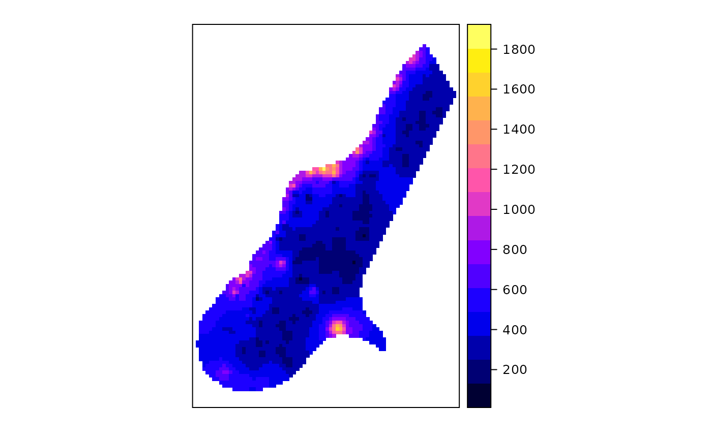

Class "SpatialGDAL"
SpatialGDAL-class.RdClass for spatial attributes that have spatial locations on a (full) regular grid on file, not (yet) actually read.
# S3 method for SpatialGDAL open(con, ..., silent = FALSE, allowedDrivers = NULL, options=NULL) # S3 method for SpatialGDAL close(con, ...) copy.SpatialGDAL(dataset, fname, driver = getDriver(dataset@grod), strict = FALSE, options = NULL, silent = FALSE)
Arguments
| con | file name of grid map for opening, SpatialGDAL object for closing |
|---|---|
| ... | other arguments (currently ignored) |
| silent | logical; if TRUE, comment and non-fatal CPL driver errors suppressed |
| dataset | object of class SpatialGDAL |
| fname | file name of grid map |
| driver | GDAL driver name |
| strict | TRUE if the copy must be strictly equivalent, or more normally FALSE indicating that the copy may adapt as needed for the output format |
| allowedDrivers | a character vector of suggested driver short names may be provided starting from GDAL 2.0 |
| options | driver-specific options to be passed to the GDAL driver; only available for opening datasets from GDAL 2.0 |
Objects from the Class
Objects can be created by calls of the form open.
SpatialGDAL(name), , where name is the name of
the GDAL file.
Slots
points:see SpatialPoints; points slot which is not actually filled with all coordinates (only with min/max)
grid:see GridTopology-class; grid parameters
grid.index:see SpatialPixels-class; this slot is of zero length for this class, as the grid is full
bbox:Object of class
"matrix"; bounding boxproj4string:Object of class
"CRS"; projectiondata:Object of class data.frame, containing attribute data
Extends
Class Spatial-class, directly.
Methods
- [
signature(x = "SpatialGDAL", i, j, ...): selects rows (i), columns (j), and bands (third argument); returns an object of class SpatialGridDataFrame-class. Only the selection is actually read.- [[
signature(i): reads band i and returns the values as a numeric vector
Note
Non-fatal CPL errors may be displayed for some drivers, currently for the AIG ArcInfo 9.3 binary raster driver using GDAL >= 1.6.2; the data has been read correctly, but the contents of the info directory did not meet the specifications used to reverse engineer the driver used in GDAL (see http://trac.osgeo.org/gdal/ticket/3031)
See also
SpatialGridDataFrame-class, which is actually sub-classed.
Examples
#> /home/rsb/lib/r_libs/sp/external/test.ag has GDAL driver AAIGrid #> and has 115 rows and 80 columnsimage(x[])#> Object of class SpatialGridDataFrame #> Coordinates: #> min max #> x 178400 181600 #> y 329400 334000 #> Is projected: NA #> proj4string : [NA] #> Grid attributes: #> cellcentre.offset cellsize cells.dim #> x 178420 40 80 #> y 329420 40 115 #> Data attributes: #> band1 #> Min. : 128.4 #> 1st Qu.: 293.2 #> Median : 371.4 #> Mean : 423.2 #> 3rd Qu.: 499.8 #> Max. :1805.8 #> NA's :6097spplot(as(x, "SpatialGridDataFrame"))#> Object of class SpatialGridDataFrame #> Coordinates: #> min max #> x 178400 181600 #> y 332000 334000 #> Is projected: NA #> proj4string : [NA] #> Grid attributes: #> cellcentre.offset cellsize cells.dim #> x 178420 40 80 #> y 332020 40 50 #> Data attributes: #> band1 #> Min. : 186.9 #> 1st Qu.: 307.2 #> Median : 393.5 #> Mean : 482.4 #> 3rd Qu.: 601.3 #> Max. :1805.8 #> NA's :3113#> Object of class SpatialGridDataFrame #> Coordinates: #> min max #> x 178400 180400 #> y 329400 334000 #> Is projected: NA #> proj4string : [NA] #> Grid attributes: #> cellcentre.offset cellsize cells.dim #> x 178420 40 50 #> y 329420 40 115 #> Data attributes: #> band1 #> Min. : 130.3 #> 1st Qu.: 295.1 #> Median : 385.7 #> Mean : 437.4 #> 3rd Qu.: 520.0 #> Max. :1805.8 #> NA's :3629#> Object of class SpatialGridDataFrame #> Coordinates: #> min max #> x 178400 181600 #> y 329400 334000 #> Is projected: NA #> proj4string : [NA] #> Grid attributes: #> cellcentre.offset cellsize cells.dim #> x 178420 40 80 #> y 329420 40 115 #> Data attributes: #> band1 #> Min. : 128.4 #> 1st Qu.: 293.2 #> Median : 371.4 #> Mean : 423.2 #> 3rd Qu.: 499.8 #> Max. :1805.8 #> NA's :6097#> Object of class SpatialGridDataFrame #> Coordinates: #> min max #> x 178400 180400 #> y 332000 334000 #> Is projected: NA #> proj4string : [NA] #> Grid attributes: #> cellcentre.offset cellsize cells.dim #> x 178420 40 50 #> y 332020 40 50 #> Data attributes: #> band1 #> Min. : 275.0 #> 1st Qu.: 590.4 #> Median : 740.5 #> Mean : 797.6 #> 3rd Qu.: 928.9 #> Max. :1805.8 #> NA's :2338#> Min. 1st Qu. Median Mean 3rd Qu. Max. NA's #> 128.4 293.2 371.4 423.2 499.8 1805.8 6097close(x)